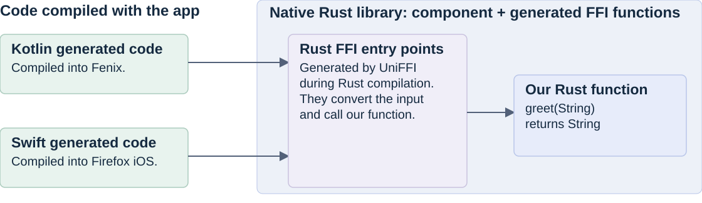
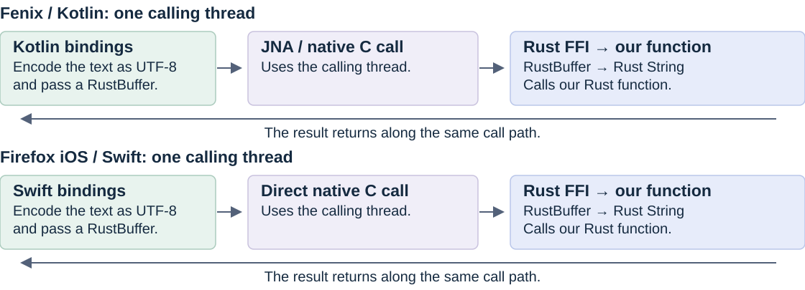
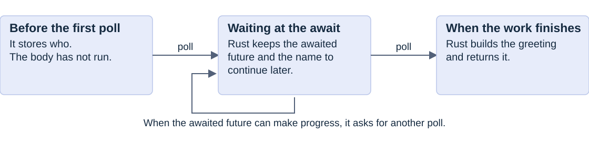
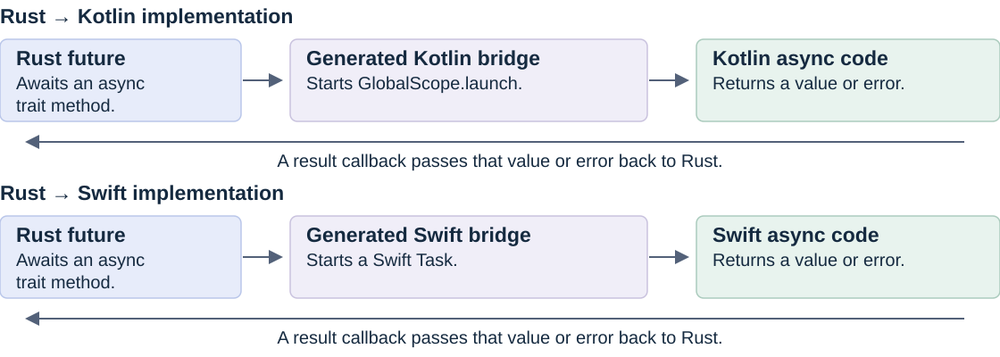
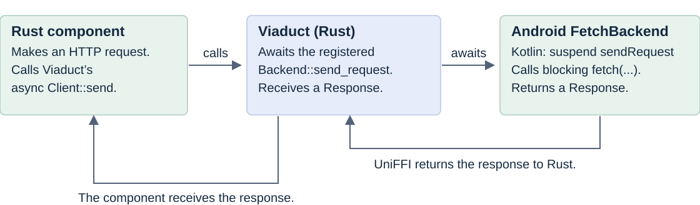
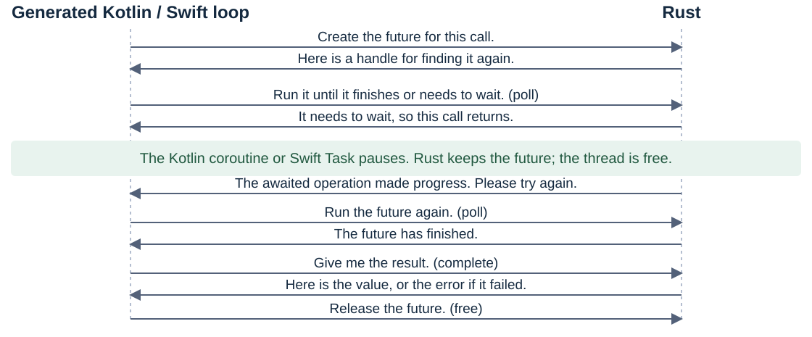
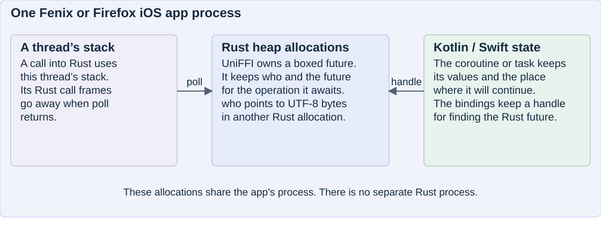
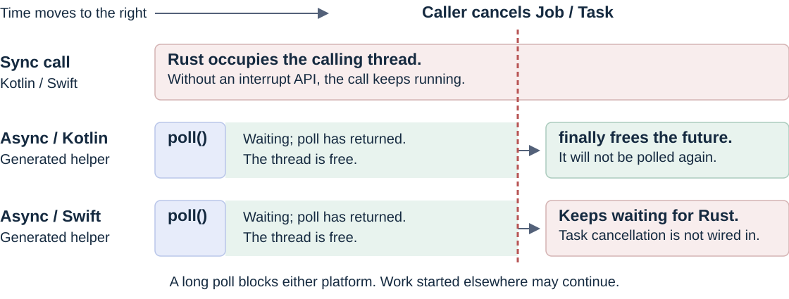
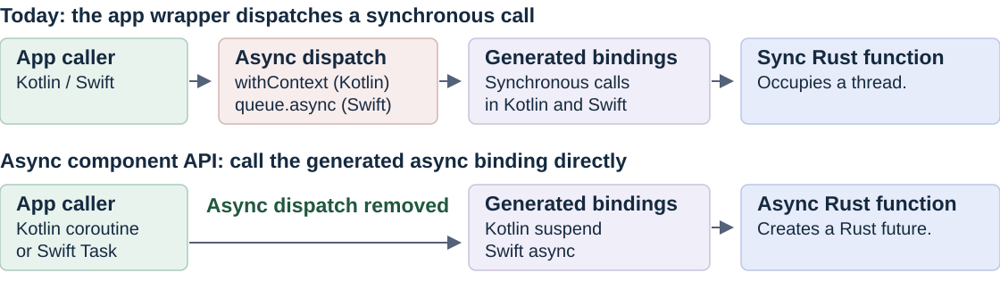

Firefox mobile + UniFFI
Kotlin and Swift can both call it.
#[uniffi::export]
pub fn greet(who: String) -> String {
format!("Hello, {who}")
}UniFFI generates code on both sides of the call.
The generated Kotlin or Swift code calls a generated Rust entry point.

Synchronous call flow

In Kotlin and Swift, a synchronous Rust call occupies the thread that called it.
If Rust waits for the network, that thread waits too.
Async Rust call
Rust compiles this function into a state machine. Calling it creates a future.
Simplified example adapted from the Rust async export
#[uniffi::export]
pub async fn greet_async(who: String) -> String {
black_box().await; // The next slide fills in this part.
format!("Hello, {who}!")
}
A future has no thread or runtime of its own.
UniFFI’s generated Kotlin or Swift code calls poll to make progress.
What does Rust await? The foreign side
In this proposal, black_box is an async operation supplied by Kotlin or Swift.

The app supplies the operation. UniFFI brings its result back to Rust.
The generated bindings can then poll Rust again so the call can continue.
Example: the app supplies the async operation
The app gives Rust an AsyncParser. Rust awaits its implementation and returns the result.

The waiting happens in the app’s async implementation.
Rust receives its result and continues.
Async calling timeline

Rust calls back to say “try again” or “finished.”
The Kotlin or Swift code makes a separate call to get the result.
Where does the Rust Future live
Each thread has its own stack. UniFFI keeps the Rust future on the heap.

Kotlin or Swift chooses where to call poll; the OS schedules that thread.
The future keeps its data between calls, while the Rust call stack comes and goes.
What stays in memory between polls
The stack belongs to the thread. The future keeps the state needed to continue the call.
| Creating the call | For greet_async(who), the future initially owns who. UniFFI puts it in a pinned heap allocation. The String’s pointer, length, and capacity stay with the future; its UTF-8 bytes live in a separate allocation. |
|---|---|
| Running a poll | The generated Kotlin or Swift code enters Rust on the calling thread. Rust uses that thread’s stack while poll executes. Crossing the FFI boundary does not create a thread. |
| Waiting | If poll returns Pending, its Rust call frames go away. The future keeps the awaited operation’s future and who for the next poll. Kotlin or Swift keeps its continuation and a handle identifying UniFFI’s Rust allocation. |
| Continuing | A later poll may run on another thread and use its stack. It accesses the same pinned future. Once Rust finishes, UniFFI stores the result until the bindings collect it and release the handle. |
These allocations share the app’s process, but have different owners and lifetimes.
Async cancellation differs in Kotlin and Swift
Kotlin can drop the waiting future. Swift’s current helper keeps waiting.

When the app process ends, both sync and async Rust work stop.
The OS may give neither app a chance to run cleanup.
Kotlin and Swift wait in different ways
Kotlin / JNA
val pollResult = suspendCancellableCoroutine<Byte> { continuation ->Code that releases the Rust future
} finally {
freeFunc(rustFuture)
}Swift
pollResult = await withUnsafeContinuation {Code that releases the Rust future
let rustFuture = rustFutureFunc()
defer {
freeFunc(rustFuture)
}| Kotlin | Swift | |
|---|---|---|
| When the caller cancels | The coroutine can leave the wait. | The helper continues to wait for Rust. |
| When the helper exits | finally releases the Rust future. | defer releases the Rust future. |
Both use the same Rust library, but each language has its own rules for waiting and cancellation.
Async Rust removes an extra layer of wrapping in both apps
Generated async bindings replace the code that makes a synchronous call async.

Questions the proposal needs to answer
| App control | Use app-owned tasks and executors. Put blocking calls on an approved worker queue. |
|---|---|
| Cancellation and memory | Cancel child work and I/O. Keep values alive while callbacks can use them. |
| Debugging | Trace a request across both languages. Test leaving, returning, cancelling, and restarting. |
The wrapper can stay. Its sync-to-async layer can go.
Lifecycle, threading, errors, and cancellation still need handling.